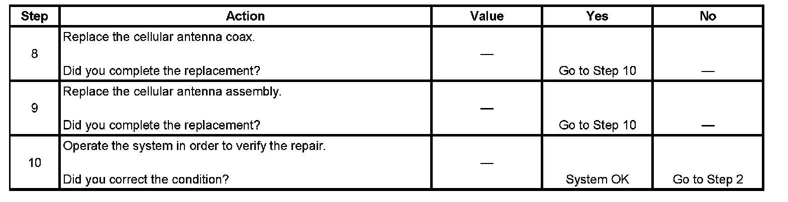

Unable to Contact OnStar Call Center
UNABLE TO CONTACT ONSTAR CALL CENTER
DIAGNOSTIC AIDS
- The customer concern may have been due to a lack of cellular service in a given area. A failure in the National Cellular Network infrastructure at the time of the customer's failed connection that has since been repaired may also have been the cause.
- If an OnStar(R) emergency call is able to successfully connect the vehicle to the OnStar(R) Call Center when an OnStar(R) Call Center button press is not, there may be a failure in the ability of the OnStar(R) system in the vehicle to be recognized by the local cellular carrier.
- If the prompt "OnStar(R) request ended" is heard, without pressing the white dot button at the end of the OnStar(R) keypress, the OnStar(R) system at one time has made a successful cellular connection, but was unable to complete the call. If repeated calls are placed with this result, contact General Motors Technical Assistance Center.
TEST
Step 1 - Step 7:
Step 8 - Step 10:
